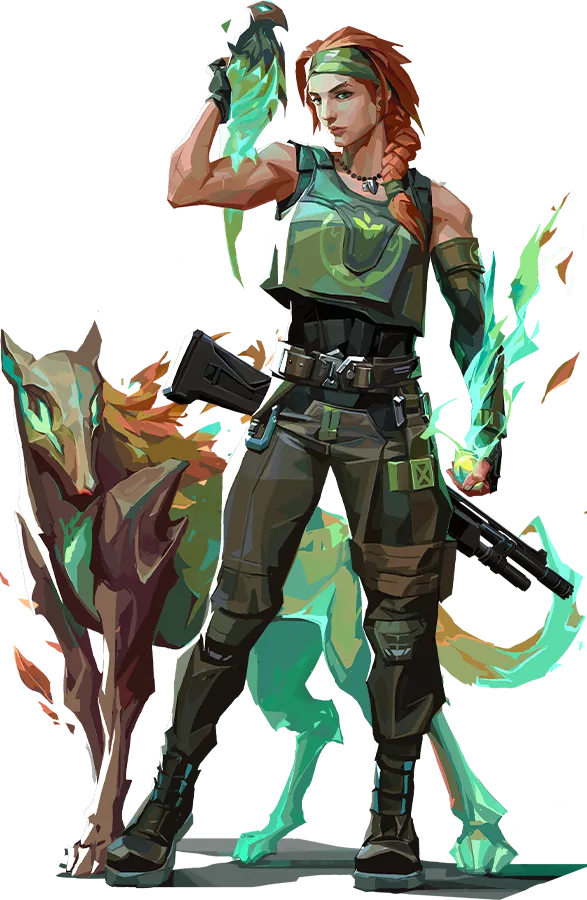

발로란트 소개 홈페이지
발로란트 플레이하기
현재창에서 발로란트 사이트로 가기
새로운창에서 발로란트 사이트로 가기
글자 연습으로 가기
스카이 소개

드루이드를 테마로 한 발로란트의 레디언트 척후대 요원. 아군 치유를 통해 팀의 안정성을 확보하고 창조물을 다루어 상대를 무력화하거나 정보를 취하는 등, 안정적인 지역 진입을 돕는 역할을 수행한다.
스카이 정보
|
|
이름 |
스카이 |
| 본명 |
키라 포스터 |
| 출신지 |
호주 뉴사우스웨일스주 님빈 |
| 역할 |
척후대 |
| 분류 |
레디언트 |
| 요원 번호 |
14 |
| 스킬 소개 영상 |